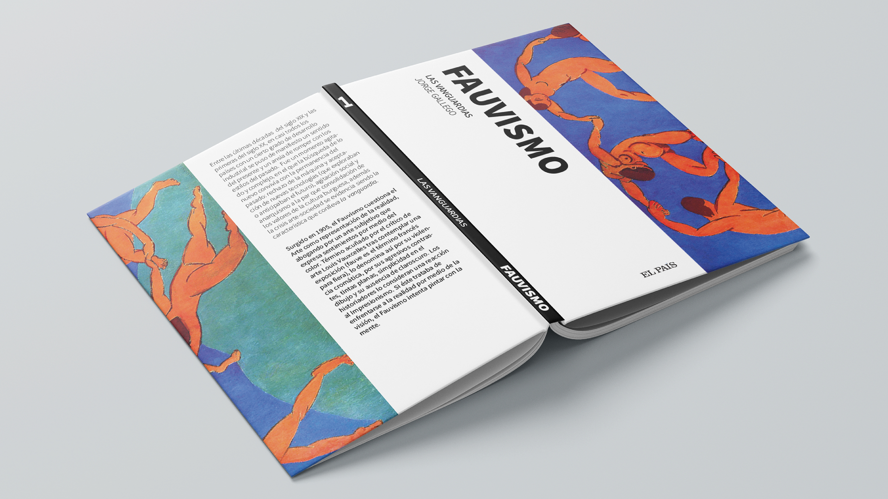
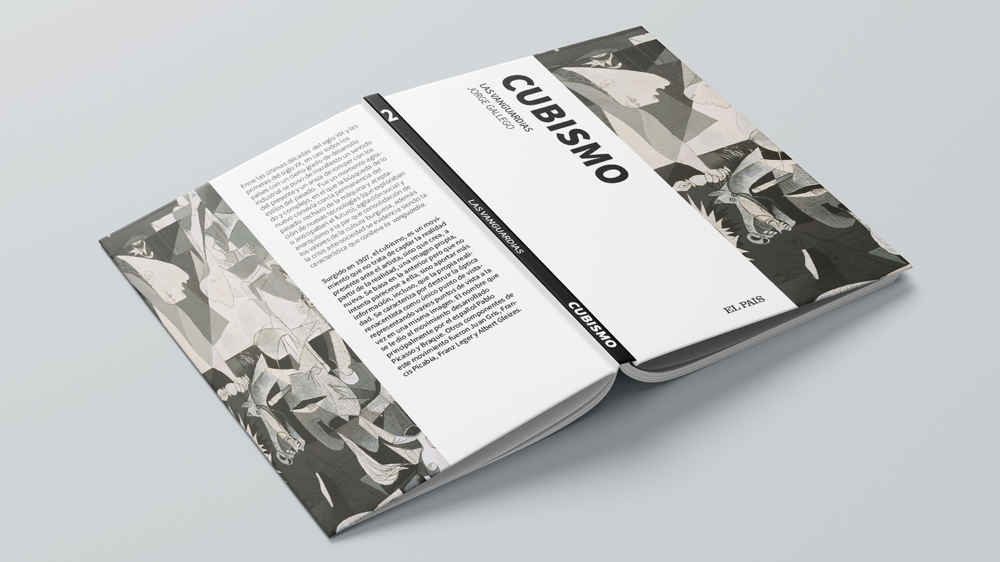
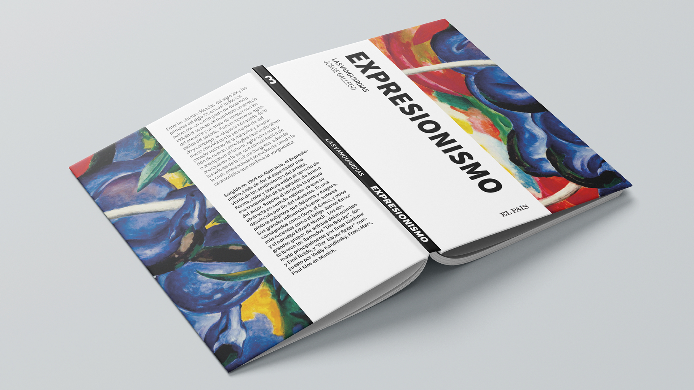
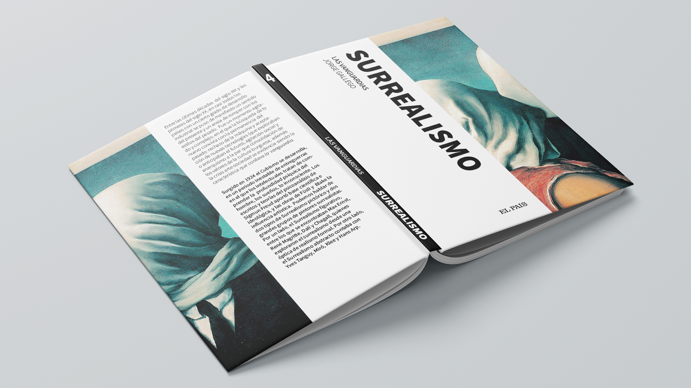
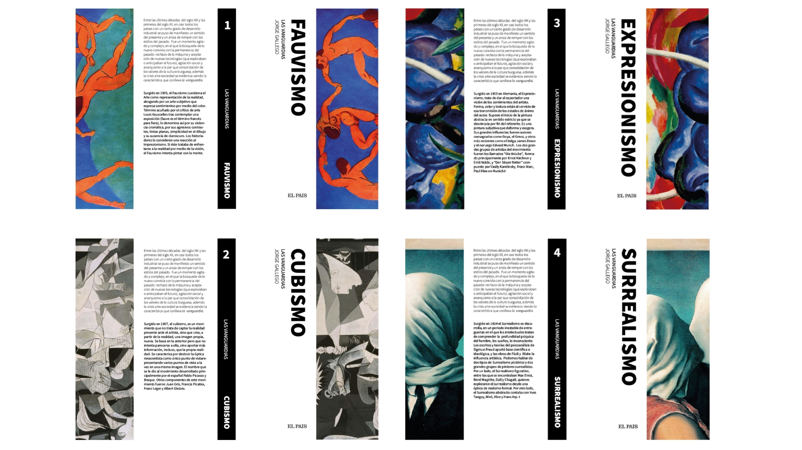

Las Vanguardias: Suplementos “El país”
This editorial project designs four uniform volumes for the supplement of “El País”, each featuring a representative image of a vanguard movement: Fauvism, Expressionism, Cubism, and Surrealism. It’s a cohesive collection that captures the essence of each style.




